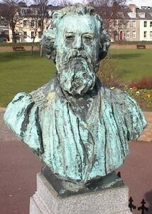

J'avais r'mèrtchi dans l'drein neunmétho qué l'Connêtabl'ye Baudains avait bein méthité sa stchulptuthe dans les gardîns d'la Pathade. Mais savêt'-ous qu'Jèrri vînt à deux vouaix près d'aboli la badgette dans l's êcoles en 1894? Et chenna sus la proposition dé Ph'lippe Baudains? Toute l'histouaithe est racontée dans l'drein neunmétho des Nouvelles Chroniques du Don Balleine, lé magâsîn Jèrriais, mais n'en v'chîn un p'tit but entouor l's actions du Connêtabl'ye.
Ch'est en tchi l'30 dé Novembre 1893 l'Chent'nyi L'Tchêne, dé Saint Hélyi, présentit l'Prîncipa du Collège Victoria, lé Sieur George Stanley Farnell, l'avant au Juge Vaudîn dans la P'tite Cour.
Nou l'atchûsit d'un assaut sus la pèrsonne d'un janne collégien dé dgiêx-sept ans, dé tchi l'péthe avait porté pliainte contre lé Prîncipa du Collège. Lé Prîncipa avouit aver donné eune fouôtée au hardé pouor la copiêthie d'rêponses, mais v'là tchi 'tait approuvé par l'Conmité du Collège.
L'Connêtabl'ye Baudains 'tait membre du Conmité du Collège. I' vînt ardgumenter en Cour qu'lé Conmité n'tait pon entout d'accord entouor la peunnition.
Criy'-ous qu'i' y'avait du d'bat dans les gâzettes! Y'en avait, sustout les cheinnes dé langue Angliaîche, tchi 'taient en faveu d'eune latteuse. Les gâzettes dé langue Française contrastaient pus à co la situâtion d'auve les êcoles Françaises en Jèrri, et proposaient qu'la tchêne 'tait eune împosition Angliaîche, et ouaithe qu'la langue prîncipale et r'grettée du Collège fûsse l'Angliais, ch'tait tout coumme eune êcole Jèrriaise. Véthe, la badgette n'tait pon eune vielle couôteunme car l'preunmié Prîncipa du Collège Victoria n'l'avait janmais faite sèrvi.
L'Sieur Farnell r'appathut dans la Cour l'5 d'Dézembre. Ayant ouï les têmouongnages, lé Juge rayit l'acte du Conmité: lé péthe 'tait contre, et don l'Conmité n'pouvait pon légaliser la peunnition. La badgette fut confistchie et l'Prîncipa fut libéthé auprès avait 'té dgèrni d'agi auve pus d'modéthâtion à l'av'nîn.
L's Êtats 'taient pouor distchuter eune Louai sus l'Înstruction Oblyigatouaithe et l'Connêtabl'ye proposit un amendement pouor aboli la badgette dans toutes les êcoles souôt'nues par l's Êtats. L'amendement fut d'baté l'8 d'Janvyi 1894. S'lon l'Connêtabl'ye dé Saint Hélyi la badgette 'tait eune èrlique du barbarisme. Lé Recteu d'Saint Hélyi dit qu'i' s'sait d'mêtchi d'distchuter chenna dans eune aut' louai: ch'est en tchi l'Connêtabl'ye avait 'té emporté par ses sentiments entouor l'affaithe du Prîncipa, mais tch'est qu'en est si un collégien bûchait sa gambe en d'valant la montée du Collège, nou dévthait-i' adopter un amendement à chutte louai-chîn pouor aboli les montées? L'amendement fut fliantchi hors: 12 vouaix contre 14.
Lé pâssé est par bordée un mio pus libétha qu'nou l'créthait. Et achteu qu'j'avons c'menchi l'nouvieau tèrme dans l's êcoles, Dgieu mèrci qu'les ardguments d'Mess Baudains gângnîtent à la fîn.
Geraint Jennings
Viyiz étout: